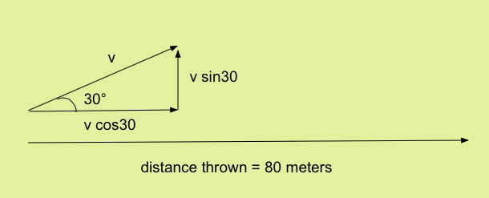
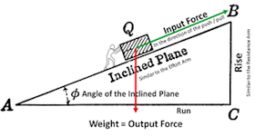

Last lesson, we talked about what force is, and some types of forces. Newton's First Law states that the velocity of an object will remain unchanged, unless an outside force acts on it. Therefore, since a force causes a change in velocity, a force causes an acceleration. Newton's Second Law tells us how to quantify this acceleration.
Newton realized that the acceleration due to a force is dependant on two things: that object's mass, and the magnitude of the force applied on that mass. Let's look at each individually.
Force applied
Question: What happens to the acceleration when we apply different amounts of force?
This interactive program illustrates how acceleration relates to force. Click on the window, then use the arrow keys to apply a force on the circle. The slider in the top right allows you to adjust the amount of force applied. See how variable amounts of force affect the acceleration.
It seems as if the more force applied, the greater the acceleration! Mathematically, we can say that acceleration is propotional to force.

Let's say an object accelerates at A meters per second when a force F Newtons is applied. That means it will accelerate at 2A meters per second squared if a force of 2F Newtons is applied. Likewise, it will only accelerate at A/2 meters per second squared if a force of F/2 Newtons is applied.
Mass of Object
Question: What happens to the acceleration when we change the mass of an object?
This interactive program illustrates how acceleration relates to mass. Click on the window, then use the arrow keys to apply a force on the circle. The slider in the top right allows you to adjust the mass of the object. See how variable amounts of mass affect the acceleration.
It seems as if the greater the mass, the less the acceleration! In other words, as the mass increases, the acceleration decreases. Mathematically, we can say that acceleration is inversely propotional to mass.
Let's say an object accelerates at A meters per second when it has a mass of M kilograms. That means it will only accelerate at A/2 meters per second squared it has a mass of 2M kilograms. Likewise, it will accelerate at 2A meters per second squared if a it had a mass of M/2 kilograms.
Unifying Mass and Force
We know that force is directly proportional to acceleration, and that mass, is inversely proporitional to acceleration. We can combine these two statements to say that acceleration is equal to the force applied, divided by the total mass.

Think about it realistically. If you push something harder, it will move faster. If you push something that's heavy, it will move slowly.
Practice Problems
1. A 7 Newton force is applied to a 3 kg object. How fast will that object accelerate?
2. An object accelerates at 12 meters per second squared when a 20N force is applied. What was the object's mass?
3. An olympic weightlifter wants to accelerate a 400kg dumbbell upwards at 2 meters per second squared. What force does he need to exert on the dumbbell?
4. The human cranium suffers a traumatic injury if a 1400N force is applied. Two people get into a fight, and one punches the other person's head. If the head weighs 5kg, what is the minimum acceleration of the head jerking back in which the cranium would sustain a traumatic injury?
5. A 1000kg car, initially going at 40 meters per second skids to a complete stop in 5 seconds. Assuming constant deceleration, what is the force applied on the car while the car is slowing down?
6. A 5kg ball is rolling at 5 meters per second to the right, until a 10N force is applied to the left for 4 seconds. Afterwards, what is the speed and direction in whih the ball is rolling.
7. (Challenge) An 800g javelin is thrown in a parabolic trajectory, at 30 degrees above the horizontal (ground). If the javelin is in contact with the human's hand for half of a second, what is the average force applied on the javelin if it travels 80 meters?
Practice Answers
1.
2.33 meters per second squared
Simply divide 7N by 3kg to find the acceleration, as stated by Newton's second law.
2.
1.66kg
Rearrange the equation to solve for mass. Divide force by acceleration.
3.
800N
Rearrange the equation to solve for force. This is where the famous "F = ma" comes in.
4.
280 meters per second squared
The minimum force to sustain a traumatic injury is 1400N, meaning we should consider this as the force. The mass of the head is 5kg, so we simply divide to find the acceleration. If this seems like alot, remember that it's the acceleration, not the velocity. Your head never travels at 280 meters per second, it just accelerates when the fist is in contact, which is only for a fraction of a second. Also, your head is attatched to your body (hopefully), so while your head would initially accelerate that fast, your body would keep your head from flying off.
5.
8000N
If a car experiences a change in velocity of 40 meters per second over 5 seconds, then it has an average acceleration of 8 meters per second squared. Now, we solve for the force using F = ma.
6.
3 meters per second to the left
A leftward 10N force is applied on a 5kg ball, so its resultant acceleration is 2 meters per second left. The force is applied for 4 seconds, so the change in velocity is 8 meters per second to the left (from v = at). Since the ball starts out going 5 meters per second to the right, and has a change in 8 meters per second to the left, it ends up going 3 meters per second to the left. (5 - 8 = -3)
7.
48.2N
We know the mass of the javelin, so we could solve for the force if only we knew the acceleration! Well, we know that the acceleration will equal the change in velocity of the javelin, divided by the time taken to throw it, because acceleration is how velocity changes with respect to time. We already know that the javelin is in contact with the hand for half of a second, so we just need to know the velocity of the javelin right as it leaves the hand. To solve this, we need kinematics. Set up a diagram.

Now this is a kinematics problem. Split the problem up into kinematics in the y direction, and kinematics in the x direction.

Since the velocity of the javelin started at zero, the change in velocity is just the final velocity, or 30.1 meters per second. Since the javelin was in contact with the hand for just half of a second, that means that the acceleration was 60.2 meters per second. Finally, we know the acceleration, and can calculate the force. F = ma, so F = (60.2)*(.8) = 48.2N. We use .8 instead of 800, because the mass needs to be in kilograms.
Back to Newton's Laws
